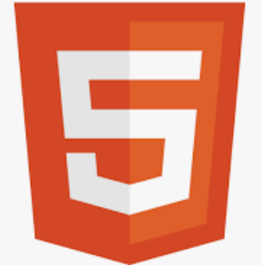

Bienvenue sur mon Portfolio
Développeur Informatique
Bonjour, Je suis actuellement en reconversion professionnelle au sein de l'établissement Groupe GEFOR situé au 7 bis rue du Louvre à Paris 75001. Avant cette formation je travaillais en tant que conseiller clientèle chez LCL depuis 10 ans, cependant Gefor m'a permit de me reconvertir dans le domaine de l'informatique et notamment en tant que developpeur informatique. GEFOR propose des formations de reconversion professionnelle pour adultes préparées en 1 an avec à la clé un diplome de Brevet de Technicien Supérieur. Dans mon cas le Brevet de Technicien Supérieur des Services Informatiques aux Organisations option Solutions Logicielles et Applications Métiers (BTS SIO option SLAM). J’ai obtenu en 2002 mon Baccalauréat STT (Sciences des Techniques Tertiaires) puis j’ai continué mes études, dans le domaine des langues étrangères appliquées, à l’université de Nanterre (ParisX), plusieurs évènement on fait que je n'ai pas pu finir mes études. Par la suite, j’ai travaillé à l’aéroport d’Orly en tant qu’agent d’escale et petit à petit, grâce à mon sérieux et à mon investissement, j’ai gravi les échelons jusqu’à devenir Agent de trafic. Cette expérience fût très enrichissante, humainement et professionnellement. J’ai ainsi pu développer des compétences dans la gestion des priorités, l’organisation mais aussi appris à garder mon sang-froid face à des situations imprévues. Au bout de 5 ans, j’ai finalement décidé de quitter mon poste car les horaires décalés ne me permettaient plus de pouvoir concilier ma vie personnelle et professionnelle. J’ai alors postulé dans le secteur bancaire et débuté comme chargé d’accueil chez LCL en 2011, avec pour ambition d’évoluer rapidement. J’ai une nouvelle fois fait mes preuves, montrer ma disponibilité, ma curiosité et mon sérieux et en 2014, j’ai pu passer le BP Banque, en interne, afin d’évoluer au poste de conseiller clientèle. En 2018, un problème de santé me fait réfléchir à mon avenir et me confirme que je m'identifie plus à vendre des produits bancaire seulement pour vendre. C’est pourquoi j’ai commencé à faire des recherches sur une reconversion professionnelle J’ai consulté de nombreux sites tel que la CNAM, CNED, ONISEP, GRETA, moncomptedeformation, developpez.com. L’informatique est un domaine qui me passionne depuis toujours. En effet, dès le lycée, j’avais commencé à me former en autodidacte et acquis des notions sur certains langages informatiques tel que JAVA et HTML, par exemple, utilisés notamment pour la création et la mise en page de page internet. Ainsi, c’est tout naturellement que le métier de développeur informatique s’est imposé à moi. Pour conforter mon choix, j’ai pris la liberté de contacter des professionnels afin de me faire une idée précise de ce métier. Ayant la chance d’avoir dans mon entourage proche plusieurs amis informaticiens, j’ai pu longuement échanger avec eux afin qu’ils me décrivent en détail leurs missions mais aussi les avantages et les inconvénients du métier de développeur informatique.
Tableaux de synthèse

PROJETS
ATELIER PROFESSIONNEL 3
Mise en place d'une solution d'inscription et de réservation à une séance de sport BackEnd et FrontEnd
- SQL
- HTML
- CSS
- REACT
- NODE.JS
{kind=link}
ATELIER PROFESSIONNEL 4
Mise en place d'une solution d'inscription et de réservation à une séance de sport BackEnd et FrontEnd
- SQL
- HTML
- CSS
- REACT
- NODE.JS
COMPETENCES


VEILLES TECHNOLOGIQUE
La veille technologique consiste à s’informer de façon systématique sur les techniques les plus récentes et surtout sur leur mise à disposition commerciales. Ces informations peuvent concerner un produit, un composant, un procédé, ou bien l’évolution d’une technique utilisée au sein d’une entreprise par exemple. La veille technologique est utilisée pour de nombreuses raisons, principalement : - Suivre les évolutions techniques - Anticiper sur la concurrence : on peut ainsi rester à la pointe du marché en acquérant toutes les nouvelles technologies qui permettent de disposer d’un avantage concurrentiel. - Diminuer les coûts de production - Augmenter la qualité des produits - Identifier les meilleures pratiques - Augmenter nos compétences Voici les quelques outils et technique pour mener à bien sa veille technologique : - ANSSI - 01Net - CERT-FR - feedly - Newsletter - Les réseaux sociaux comme Twitter, Instagram, Facebook Pour ma veille technologique, j’ai décidé de suivre le sujet de la Big Data et la cybersécurité qui sont à mon avis en constante évolution, surtout la cybersécurité où l'on recoit tous les jours un nouvel article d'une éventuelle attaque ou d'une mise en garde.